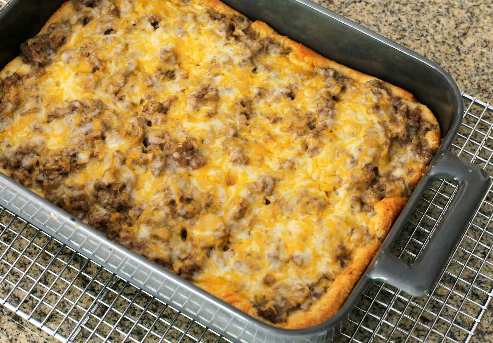

This hamburger bake is the best thing since sliced bread! Easy to prepare and fast to serve!
- 1 Can flaky biscuits
- 1 Lb ground beef
- 1 8oz bag shredded cheddar cheese
- 1 Cup BBQ Sauce
- 1 Cup Mustard
- Preheat oven to biscuit cooking temp on package.
- Grease a 9x13 baking dish.
- Press biscuits into pan until bottom is covered.
- Cook biscuits in oven until almost fully cooked.
- While biscuits cook, cook ground beef over medium heat until done. Drain.
- Mix together ground beef, BBQ sauce, mustard until combined.
- Once biscuits are finished, add meat mixture to pan, then spread bag of cheese on top evenly covering surface.
- Place back in oven until cheese is melted, serve and enjoy!